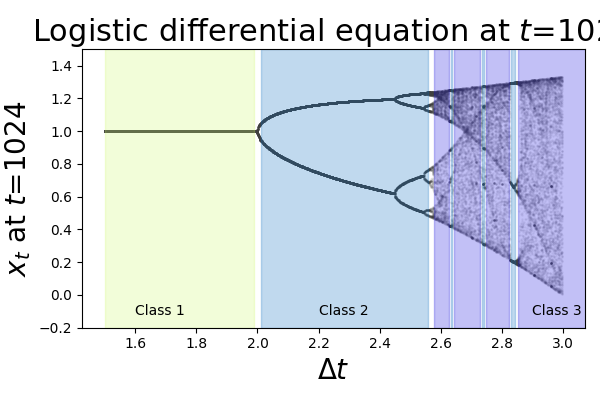

The differential equation of the logistic function

A continuous version of the logistic map. Sweeping across step size values in a numerical simulation of the logistic diff. eq. reproduces the hallmark bifurcation route to chaos of the logistic map.
In the differential equation of the logistic, modifying the step size dt or the rate variable r is equivalent.
I've roughly delineated the figure into regions corresponding to Prigogine's classification system for dynamical systems, or Wolframs CA classes, if you prefer:
- Equilibrium systems
- Limit cycle systems
- Strange attractor/chaotic systems
- Dissipative structures (~white border regions in the figure)
.
- Prigogine, I. (1978). Time, Structure, and Fluctuations. Science, 201, 777 - 785. archived pdf
- A review of Prigogine's concept of dissipative structures as it relates to non-equilibrium self-organization:
Goldbeter, Albert. (2018). Dissipative structures in biological systems: bistability, oscillations, spatial patterns and waves. Phil. Trans. R. Soc. A.37620170376 doi: 10.1098/rsta.2017.0376
- Wolfram, S. (1983). Universality and complexity in cellular automata. Physica D: Nonlinear Phenomena, 10, 1-35.
{kind=link}